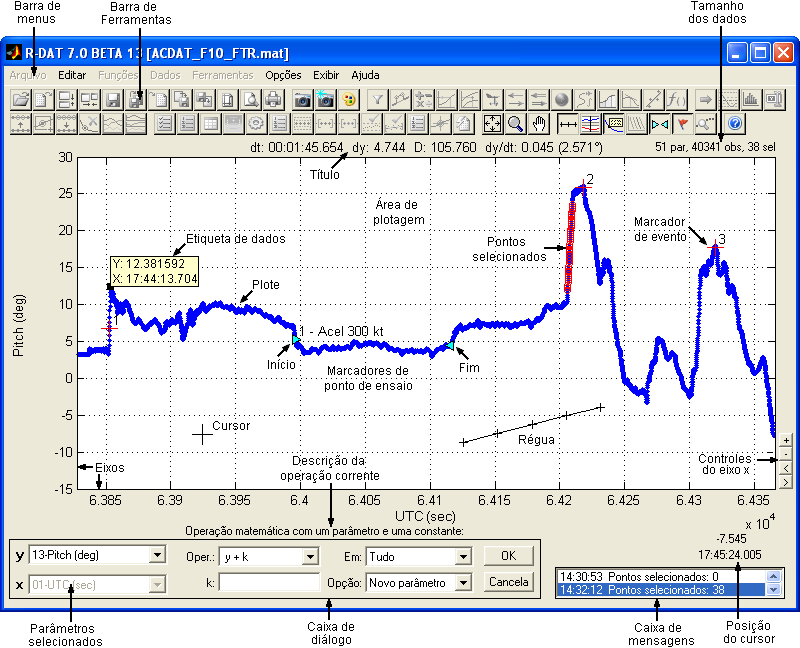
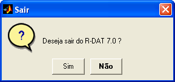
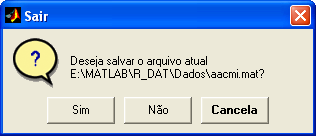

| Interface |
|
Abrindo o
R_DAT
Para executar o
R_DAT, é necessário que o MATLAB
versão 6.5 esteja aberto. Após abrir o MATLAB, as opções para a
execução do R_DAT
são as seguintes:
- Digite r_dat no Command Window,
caso a pasta do R_DAT esteja no path
do MATLAB;
- Selecione a
pasta do R_DAT como Current Directory
do MATLAB e digite r_dat no Command Window;
- Localize e
clique com o botão direito no arquivo R_DAT.m na janela Current Directory
do MATLAB e selecione Run.
Ao carregar, o
R_DAT automaticamente acrescentará sua
pasta e a pasta auxiliar à
lista de caminhos (path) do MATLAB.
O caminho do R_DAT ficará
ativo durante a sessão do MATLAB. Caso o mesmo seja fechado, o caminho
será perdido, a não ser
que o usuário salve a lista de caminhos na janela Set
Path do MATLAB.
|
Nota: A janela
principal do R_DAT requer resolução mínima de 800 × 600 pixels e não
executará em resoluções menores. |
|
Nota: Algumas
janelas secundárias requerem resolução mínima de 1024 × 768 pixels e
não executarão em resoluções menores. |
|
Nota: Ao alterar a
resolução da tela é necessário reiniciar o MATLAB para que o ambiente
reconheça a alteração. |
Layout
da Tela Principal

Barra de
Menus
Onde se
localizam os menus de acesso às funções e
operações do R_DAT. A habilitação de cada menu
depende
da operação corrente.
Barra de
Ferramentas
Onde se
localizam os botões de acesso às principais
funções e operações do R_DAT. A habilitação de cada botão depende da
operação
corrente.
O usuário pode
optar por exibir ou não a Barra de
Ferramentas na opção “Barra de ferramentas” do menu
“Exibir” ou ainda escolher os botões que deseja exibir ou ocultar na
opção
“Personalizar
barra de ferramentas” do menu “Exibir”, ou clicando com o
botão direito sobre a Barra de Ferramentas.
Área de Plotagem
Área onde são
apresentadas as curvas dos parâmetros
selecionados. É possível apresentar até cinco gráficos, com até três plotes por gráfico, de acordo
com a opção “Gráficos
Múltiplos” do menu “Dados”.
Plotes
Curvas dos
parâmetros selecionados. É possível
apresentar até 16 plotes
diferentes, de acordo com a
opção “Plotes Múltiplos” do menu
“Dados”.
Título
Apresenta
orientações ao usuário (como requisitar
uma ação) e informações gerais (como dados de ajuste de curva e de
régua).
Possui um menu com opções específicas que é acessado pelo botão direito
do
mouse.
Tamanho
dos Dados
Apresenta
continuamente o tamanho da matriz de dados
(número de parâmetros e de observações) e a quantidade de pontos
selecionados.
Régua
A régua é uma
linha apresentada no gráfico principal
que pode ter suas extremidades movidas pelo usuário com o mouse.
Enquanto a
régua estiver habilitada pela opção "Régua"
do menu "Exibir", o título do gráfico apresentará as informações
relativas ao posicionamento da régua, como distâncias e declinação.
Marcadores
de Eventos
Apresentam no
gráfico as posições de eventos
definidos pelo usuário, que pode optar por mostrar apenas os números
dos
eventos ou também as descrições.
Etiqueta
de Dados
Apresenta uma
caixa de informações com os valores
precisos dos pontos do plote. É habilitada pela opção "Etiqueta de dados"
no
menu “Exibir”, sendo apresentada
uma etiqueta para cada plote, sincronizadas no tempo. Pode ser
arrastada com o
mouse (botão esquerdo) e reorientada (botão direito).
Cursor
Indica a
posição do cursor do mouse. É a principal
interface com o usuário, usada para operar os objetos de controle
(menus,
botões e listas), para controle da escala do gráfico (zoom) e para
operações de
seleção e arrastamento de objetos.
Parâmetros
Selecionados
Listas para
seleção da abscissa (y) e da ordenada
(x) do plote principal.
Caixa de
Diálogo
Área de
interface para a entrada de dados e de
opções para execução das operações. Os objetos e as opções apresentadas
dependem da operação corrente.
Marcadores
de Pontos de Ensaio
Apresentam no
gráfico as posições de início e fim dos
pontos
de ensaio definidos pelo usuário.
Eixos
Mostram os
valores da abscissa e da ordenada, bem
como o nome dos parâmetros selecionados em cada eixo.
Caixa de
Mensagens
Apresenta, em ordem
cronológica, as mensagens do sistema e a descrição das operações
realizadas,
possibilitando o registro do progresso de cada sessão do R_DAT. As
mensagens
podem ser salvas em arquivo texto, através de um menu
com opções específicas que é acessado pelo botão direito do mouse.
Caso a largura
da janela do R_DAT seja menor que
1000 pixels, a Caixa de Mensagens não será exibida.
Posição
do Cursor
Apresenta
continuamente a posição do cursor, caso o
mesmo esteja posicionado sobre os gráficos. Parâmetros de tempo em
segundos e
de coordenadas em graus podem sem apresentados por extenso (por
exemplo, 12:43:25.100 e
S 25°37.120’), de acordo com a seleção no
menu “Opções”.
Botões de
Controle do Eixo x
Possibilita o
controle da escala do gráfico (zoom) e
o deslocamento do gráfico 20% para esquerda ou direita.
Saindo
do R_DAT
Há duas opções
para sair do R_DAT:
- Clique em
“Sair” no menu “Arquivo”;
- Use as opções
de fechamento de janela do Windows (ícone ou botão “fechar” na barra de
título da janela).
Ao receber um
comando de fechamento, o R_DAT,
solicitará uma confirmação do usurário, para evitar fechamento
inadvertido.

Caso o arquivo
de trabalho atual tenha sofrido
alguma modificação, o R_DAT questionará se o usuário deseja salvar as
alterações:

- A opção “Sim”
sobrescreverá o arquivo com as
modificações realizadas nas matrizes de trabalho e encerrará o R_DAT;
- A opção “Não”
descartará as matrizes de trabalho e
encerrará o R_DAT;
- A opção
“Cancela” retornará ao R_DAT sem tomar
nenhuma ação.
|
Nota: Certifique-se
de ter salvado o arquivo de trabalho antes de fechar o R_DAT. A opção
“Não” descartará as matrizes de trabalho atuais, que não poderão ser
recuperadas. |
| |
Instalação |
Início |
|